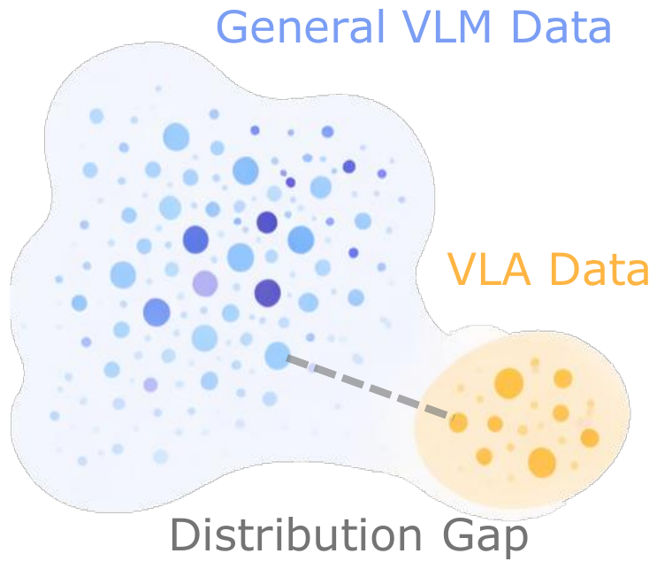
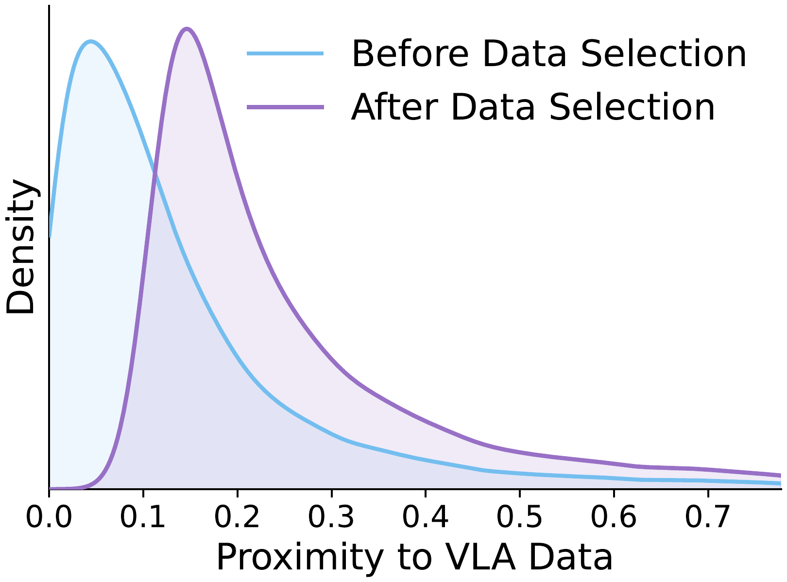
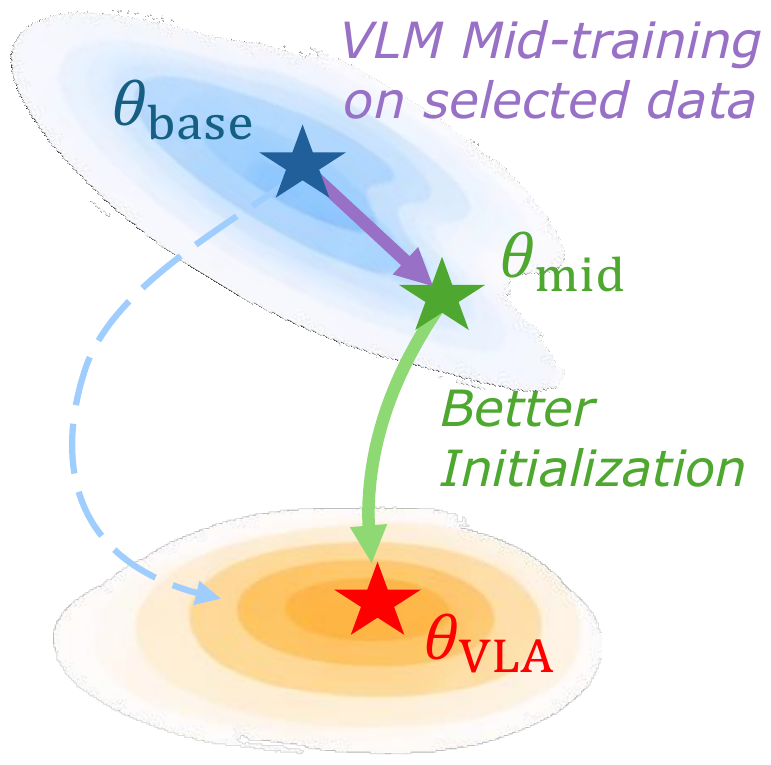
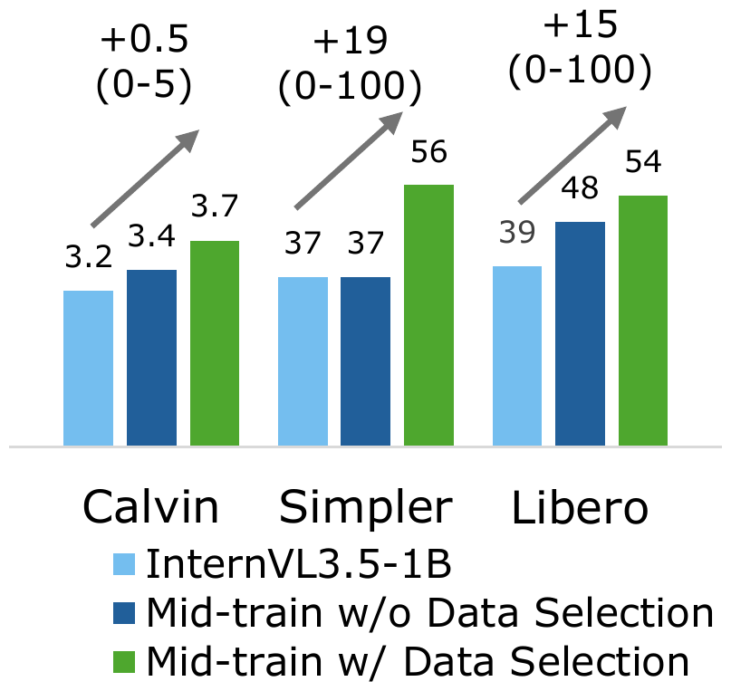
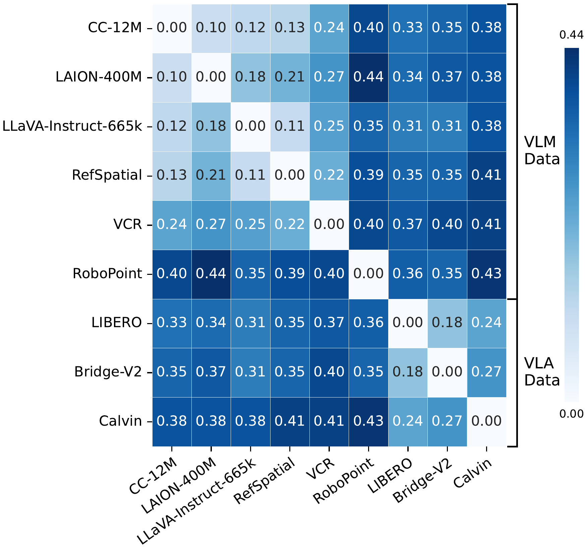
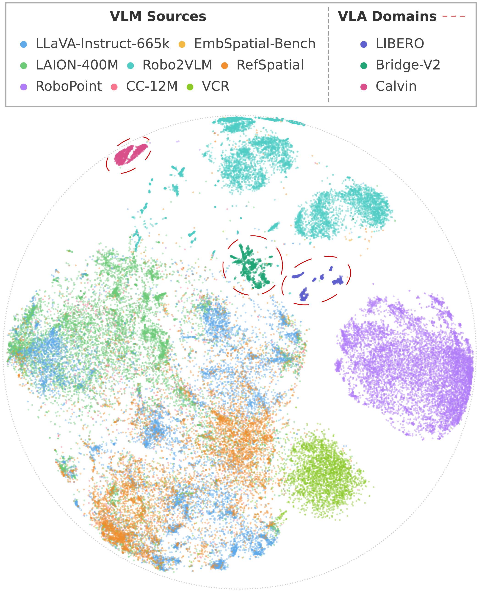
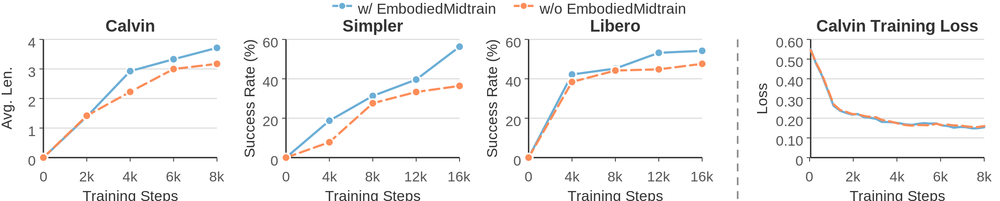
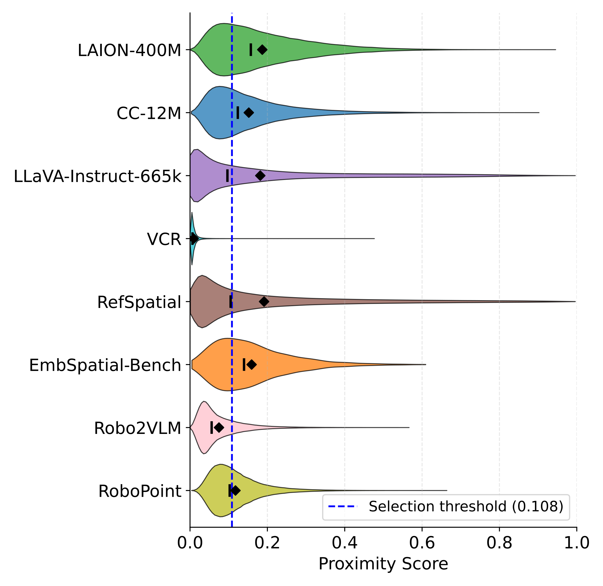

Better VLM initialization for VLA with mid-training on aligned data distribution
FMEA @ CVPR 2026 Best Paper Award
TL;DR — Most VLAs initialize from off-the-shelf VLMs that aren't tailored to embodied domains. EmbodiedMidtrain bridges this gap with a lightweight data engine that selects VLM samples closest to the VLA distribution for mid-training, consistently boosting VLA performance across benchmarks and backbones.




Vision-Language-Action Models (VLAs) inherit their visual and linguistic capabilities from Vision-Language Models (VLMs), yet most VLAs are built from off-the-shelf VLMs that are not adapted to the embodied domain, limiting their downstream performance. In this work, we propose EmbodiedMidtrain to bridge the gap between VLMs and VLAs. We first characterize the data distribution gap between them, showing that VLA data occupy compact regions that are largely separated from the broader VLM distribution, while the degree of alignment varies substantially both across and within VLM data sources. Then, we build a mid-training data engine that leverages a lightweight learnable proximity estimator to select the most VLA-aligned candidates from a large VLM pool, and mid-trains the VLM on this curated mixture before downstream VLA fine-tuning. Experiments on three robot manipulation benchmarks show that mid-training consistently improves performance across different VLM backbones, achieving results competitive with expert VLAs and off-the-shelf VLMs trained with larger model scale and training budgets. Further analysis reveals that mid-training provides a stronger initialization for VLA fine-tuning, with gains emerging from the earliest steps and widening throughout training. Moreover, the data engine captures both dataset-level and sample-level alignment signals, favoring spatial reasoning over text-centric tasks while preserving the diversity of the VLM data.
A mid-training data engine that learns a proximity estimator to score VLM samples by their closeness to the VLA domain, and selects the top-ranked candidates to curate a distribution-aligned mid-training mixture.
Extensive experiments on Calvin ABC-D, SimplerEnv Bridge, and Libero-10 demonstrate large and consistent improvements, achieving results competitive with substantially larger models.
Mid-training produces an initialization whose advantages emerge from the earliest fine-tuning steps and amplify over time, while the learned proximity estimator outperforms hand-crafted alternatives.
Since most VLAs inherit their visual and linguistic representations from VLM pretraining, the quality of this initialization is fundamentally shaped by the data the VLM was trained on. We analyze VLM and VLA data in a shared representation space using the last hidden states of a VLM as the feature representation $h(\cdot)$ for each data sample, and quantify the distance between each pair of datasets with Maximum Mean Discrepancy (MMD):
$\operatorname{MMD}^2(P,Q) = \mathbb{E}_{x,x' \sim P}[k(x,x')] - 2\,\mathbb{E}_{\substack{x \sim P \\ y \sim Q}}[k(x,y)] + \mathbb{E}_{y,y' \sim Q}[k(y,y')]$
where $k(x,y) = \exp(-\|h(x) - h(y)\|_2^2 / 2\sigma^2)$ is a Gaussian RBF kernel with bandwidth $\sigma$ set via the median heuristic.


The distribution gap between VLM and VLA data is large and clear. The distribution space of VLM data and VLA data is largely separated, with only a few near-neighbors. MMD distances are generally smaller within the VLM group and within the VLA group than across the two groups, quantitatively confirming a clear distributional mismatch. VLA datasets form compact clusters that are mostly detached from the main regions occupied by VLM datasets, while only a small subset of the VLM data lies nearby.
The distribution gap exhibits substantial internal heterogeneity. Although VLM and VLA data are separated overall, their mismatch is not uniform within each dataset. Some VLM sources lie noticeably closer to VLA domains than others, with a few local regions exhibiting clear cross-domain proximity despite the global separation. This suggests that the gap is better characterized as a spectrum of alignment rather than a binary distinction, motivating sample-level selection within each dataset.
These insights suggest that enhancing VLMs for embodied tasks requires reshaping the training data distribution toward the VLA domain — not through coarse dataset-level mixture adjustment, but through fine-grained sample-wise selection.
We propose a mid-training data engine that selects VLM samples whose distribution best aligns with the VLA domain. The data mixture spans both general and embodied-oriented VLM sources to preserve diversity, and selection operates at the sample level rather than the dataset level.
Let $\mathcal{D}_{\mathrm{VLM}}$ and $\mathcal{D}_{\mathrm{VLA}}$ denote the candidate VLM pool and target VLA corpus, with densities $p_{\mathrm{VLM}}$ and $p_{\mathrm{VLA}}$ over a shared representation space. Our goal is to select a size-$K$ subset whose distribution best aligns with VLA data:
$\mathcal{D}_{\mathrm{VLM}}^{*} = \underset{\mathcal{D}' \subseteq \mathcal{D}_{\mathrm{VLM}},\; |\mathcal{D}'| = K}{\operatorname{argmin}} \; d(P_{\mathcal{D}'},\; P_{\mathrm{VLA}})$
where $d$ is a distributional divergence. Solving this exactly is intractable, so we relax it to per-sample scoring and top-$K$ selection: $\mathcal{D}_{\mathrm{VLM}}^{*} = \operatorname{top\text{-}K}_{x_i \in \mathcal{D}_{\mathrm{VLM}}} s(x_i)$. The key question is how to define the scoring function $s$. A natural choice is the density ratio $p_{\mathrm{VLA}}(x)/p_{\mathrm{VLM}}(x)$, but estimating this directly in high-dimensional feature spaces is difficult. We instead leverage a classical result from density ratio estimation: a binary classifier trained to distinguish two distributions recovers this ratio at optimality:
$s^{*}(x) = \dfrac{p_{\mathrm{VLA}}(x)}{p_{\mathrm{VLA}}(x) + p_{\mathrm{VLM}}(x)}$
Since $s^{*}$ is monotonically increasing in the density ratio, ranking by the classifier output is equivalent to ranking by the density ratio.
We instantiate this as a lightweight proximity estimator on frozen VLM features. The estimator applies a learnable scoring function $f$ on top of the frozen VLM's last hidden state $\phi(\mathbf{x})$, followed by a sigmoid:
$s(\mathbf{x}) = \sigma\!\big(f(\phi(\mathbf{x}))\big)$
We train with VLA samples as positives and VLM samples as negatives, using binary cross-entropy loss:
$\mathcal{L}_{\mathrm{cls}} = -\mathbb{E}_{y \sim \mathcal{D}_{\mathrm{VLA}}} [\log s(y)] - \mathbb{E}_{x \sim \mathcal{D}_{\mathrm{VLM}}} [\log (1-s(x))]$
After training, we rank all candidate VLM samples by $s(x)$ and retain the top-$K$ to form $\mathcal{D}_{\mathrm{VLM}}^{*}$ for mid-training. This procedure turns a broad candidate pool into a more targeted corpus for embodied adaptation, preserving the useful diversity of VLM data while shifting the training distribution toward the VLA domain.
We evaluate on three simulated manipulation benchmarks: Calvin ABC-D, SimplerEnv Bridge, and LIBERO-10. Our mid-trained models achieve consistent and substantial improvements, competitive with expert VLAs and much larger off-the-shelf VLMs.
| Model | Size | # Samples Seen (Calvin / Simpler / Libero) |
Calvin (Tasks Completed in a Row) | Simpler↑ | Libero↑ | |||||
|---|---|---|---|---|---|---|---|---|---|---|
| 1 | 2 | 3 | 4 | 5 | Avg. Len.↑ | |||||
| Expert VLA Baselines* | ||||||||||
| OpenVLA (Llama-2) | 7.7B | 7.7M / 25.6M / 25.6M | 0.792 | 0.644 | 0.499 | 0.368 | 0.245 | 2.548 | 4.2 | 53.7 |
| π0 (Paligemma-1) | 3.1B | 7.7M / 25.6M / 25.6M | 0.896 | 0.785 | 0.786 | 0.610 | 0.532 | 3.509 | 60.4 | 46.0 |
| Off-the-shelf VLM Baselines* | ||||||||||
| Qwen2.5VL-3B | 3.8B | 7.7M / 25.6M / 25.6M | 0.922 | 0.842 | 0.766 | 0.700 | 0.626 | 3.856 | 48.0 | 43.0 |
| Qwen2.5VL-7B | 8.3B | 7.7M / 25.6M / 25.6M | 0.935 | 0.864 | 0.807 | 0.758 | 0.693 | 4.057 | 46.8 | 45.0 |
| Qwen3VL-2B | 2.1B | 7.7M / 25.6M / 25.6M | 0.943 | 0.882 | 0.831 | 0.776 | 0.710 | 4.142 | 49.0 | 55.8 |
| Qwen3VL-4B | 4.4B | 7.7M / 25.6M / 25.6M | 0.933 | 0.857 | 0.790 | 0.719 | 0.644 | 3.943 | 56.3 | 44.4 |
| Qwen3VL-8B | 8.8B | 7.7M / 25.6M / 25.6M | 0.940 | 0.868 | 0.797 | 0.746 | 0.684 | 4.035 | 58.3 | 46.2 |
| Qwen3VL-30B-A3B | 30B-A3B | 7.7M / 25.6M / 25.6M | 0.939 | 0.877 | 0.820 | 0.757 | 0.682 | 4.075 | 44.8 | 46.8 |
| Paligemma-1 | 2.9B | 7.7M / 25.6M / 25.6M | 0.914 | 0.813 | 0.692 | 0.599 | 0.488 | 3.506 | 55.3 | 44.2 |
| Paligemma-2 | 3.0B | 7.7M / 25.6M / 25.6M | 0.901 | 0.775 | 0.669 | 0.575 | 0.486 | 3.406 | 57.3 | 46.2 |
| KosMos-2 | 1.7B | 7.7M / 25.6M / 25.6M | 0.878 | 0.721 | 0.591 | 0.498 | 0.408 | 3.096 | 60.4 | 55.0 |
| VLM with EmbodiedMidtrain (Ours) | ||||||||||
| InternVL3.5-1B | 1.1B | 1.0M / 4.1M / 4.1M | 0.909 | 0.754 | 0.606 | 0.498 | 0.406 | 3.173 | 36.5 | 39.0 |
| + EmbodiedMidtrain | 1.1B | 1.0M / 4.1M / 4.1M | 0.935 | 0.838 | 0.737 | 0.653 | 0.551 | 3.714 | 56.3 | 54.2 |
| Qwen3VL-2B | 2.1B | 1.0M / 4.1M / 4.1M | 0.887 | 0.747 | 0.612 | 0.527 | 0.432 | 3.205 | 38.5 | 33.8 |
| + EmbodiedMidtrain | 2.1B | 1.0M / 4.1M / 4.1M | 0.922 | 0.808 | 0.700 | 0.623 | 0.533 | 3.584 | 45.8 | 40.2 |
Table 1: Main results across Calvin ABC-D, SimplerEnv-Bridge, and Libero-10. # Samples Seen is reported as the training budgets on Calvin / SimplerEnv / Libero. * Results for Expert VLA Baselines and Off-the-shelf VLM Baselines are reproduced and reported by VLM4VLA.

The mid-trained model already achieves higher performance in the early stages of fine-tuning, providing direct evidence that proximity-based mid-training yields a better initialization for VLA learning.

[(0.976, 0.244)]
While all datasets concentrate in the low-to-moderate score range, the distribution shapes vary noticeably across datasets. Among them, RefSpatial achieves the highest average scores while VCR receives the lowest, indicating that the estimator assigns clear dataset-level preferences. At the same time, the within-dataset score spread shows that the estimator also performs fine-grained sample-level selection, retaining only the most VLA-aligned samples even from high-scoring datasets.
We ablate two central design choices: the advantage of proximity-based selection over random sampling, and the effectiveness of different proximity measurements on mid-training InternVL3.5-1B backbone.
| Setting | Calvin↑ | Simpler↑ | Libero↑ |
|---|---|---|---|
| Random Selection | 3.398 | 43.8 | 48.4 |
| Proximity Measurements | |||
| Feat.-space Avg. Dist. | 3.126 | 53.1 | 51.2 |
| VLA-cond. Perplexity | 3.159 | 55.2 | 48.0 |
| Delta Perplexity | 1.527 | 39.6 | 54.2 |
| Learned Estimator (Ours) | 3.714 | 56.3 | 54.2 |
Table 2: Ablation results for random selection and different proximity measurements on mid-training InternVL3.5-1B backbone. The learned proximity estimator consistently outperforms all alternatives.
Both random sampling and the three hand-crafted alternatives — feature-space average distance, VLA-conditioned perplexity, and delta perplexity — underperform our learned estimator across all three benchmarks, confirming that mid-training’s gains come from identifying VLA-aligned samples rather than from additional data alone, and that a learned proximity signal captures this alignment far more robustly than heuristic metrics.